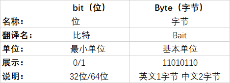

1.bit:位 （小写b) 也称比特
是英文 binary digit的缩写 二进制数系统中，每个0或1就是一个位(bit)
位是数据存储（计算机中信息）的最小单位
计算机中的CPU位数指的是CPU一次能处理的最大位数。例如32位计算机的CPU一次最多能处理32位数据
2.Byte:字节(大写B)
8bit就称为一个字节（Byte）, 1Byte=8bit
记为Byte或B,是计算机中信息的基本单位
3.区别

bps 是 bits per second 的简称。一般数据机及网络通讯的传输速率都是以「bps」比特/位为单位。如 56Kbps、100.0Mbps 等。
Bps 是 Byte per second 的简称。而电脑一般都以「Bps」字节/速度为单位，如 1Mb/s(Mbps) 大约等同 128 KB/s(KBps)。
举例：USB 2.0 接口传输速率为 “480Mbps”，很多人误解为 480 兆/秒，实际 “480Mbps” 是指 “480 兆比特/秒” 或 “480 兆位/秒”，等于 “60 兆字节/秒”。
4.相关换算
1个字母=1个字节=8bit(8位)
1个数字=1个字节=8bit(8位)
1个汉字=2个字节=16bit(16位)
1 Byte = 8 Bits
1 KB = 1024 Bytes
1 MB = 1024 KB
1 GB = 1024 MB